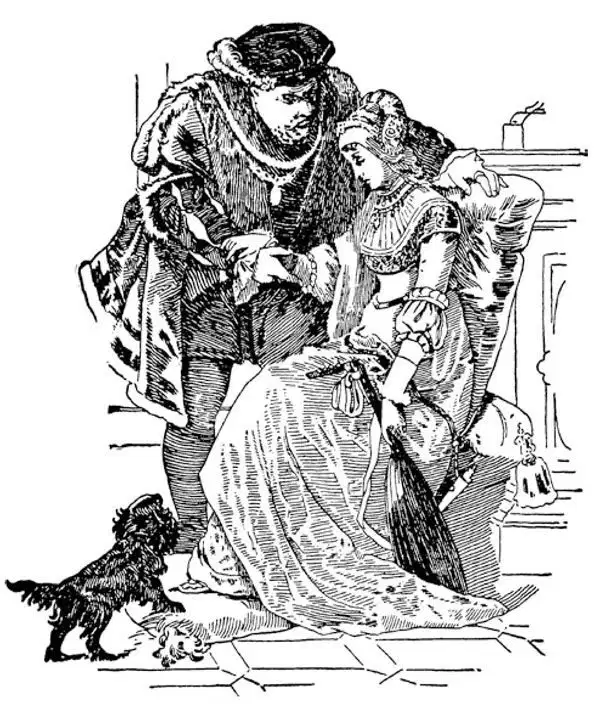

67
Christians Quarrel
基督徒的争吵

SOME people say young boys and girls can't understand this chapter. They say it is too difficult. But I want to see if it is.
Up to this time, as I have told you before, in Western Europe had been one Christian religion—the Catholic. There was no Episcopalian, nor Methodist, nor Baptist, nor Presbyterian, nor any other denomination. All were just Christians.
In the sixteenth century, however, some people began to think that changes should be made in the Catholic religion.
Others thought changes should not be made.
Some said it was all right as it was.
Others said it wasn't all right as it was. So a quarrel started.
This is the way the trouble began. The pope was building a great church called St. Peter's in Rome. It took the place of the old church that Constantine had built on the spot where St. Peter was supposed to have been crucified head down. The pope wanted it to be the largest and finest church in the world, for Christ had said, “Thou art Peter, and upon this rock [Peter means rock in Latin] I will build my church. …” So the Church of St. Peter's was to be the Capitol of the Christian religion. Both Michelangelo and Raphael had worked on the plans for the new church. In order to get marble and stone and other materials for this Church of St. Peter, the pope did as others before him had done; he tore down other buildings in Rome and used their stone for the new church.
Besides all this the pope needed an enormous amount of money to build such a magnificent church as he had planned. So he started to collect from the people. Now, there was a man in Germany named Martin Luther who was a monk and a teacher of religion in a college. Martin Luther thought that not only this but also other things in the Catholic Church were not right. He made a list of ninety-five things that he thought were not right and nailed them up on the church door in the town where he lived, and he preached against doing these things. The pope sent Luther an order to stop, but Luther made a bonfire and burned it publicly. Many took sides with Luther, and before long there was a great body of people who had left the Catholic Church and no longer obeyed the pope.
The pope called on the king of Spain to help in this quarrel with Luther. The reason he called on him was this: the king of Spain was Charles V, the grandson of the Ferdinand and Isabella who had helped Columbus. He was not only a good Catholic but the most powerful ruler in Europe. The Spanish explorers had claimed large parts of America and so Charles was owner of a large part of the New World. But he was emperor not only of these Spanish settlements in America but of Austria and of Germany as well. It was quite natural that the pope should go to Charles for help.
Charles commanded Luther to come to a city named Worms to be tried. He promised Luther that no harm would be done him, and so Luther went. When Luther arrived at Worms, Charles ordered him to take back all he had said. Luther refused to do so. Some of Charles's nobles said Luther should be burned at the stake. But Charles, as he had promised, let him go and did not punish him for his belief. Luther's friends were afraid, though, that other Catholics might do him harm. They knew Luther would take no care of himself, and so they themselves took him prisoner and kept him shut up for over a year, so that no one could harm him. While Luther was in prison, he translated the Bible into German; it was the first time that the Bible had been written in that language.

Henry VIII and his second wife Anne Boleyn
亨利八世和他的第二任妻子安妮•博林
The people who protested against what the pope did were called Protestants, and the new churches that grew from this protest are still called Protestant today. The time when these changes were made in the Catholic form of worship was called Re-form-ation, as the old religion was reformed .
Now, you may be a Catholic and your best friend may not be a Catholic, but that makes no difference in your friendship. But at that time those who were Catholics were deadly enemies of those who were not, and vice versa. Each side was sure it alone was right and the other side was wrong. Each side fought for the things it thought were right, fought the other side as furiously and madly and bitterly as if the other side were scoundrels and devils. Friends and relatives murdered each other because they thought differently about religion, and yet all were supposed to be Christians.
Charles was greatly worried and troubled by the religious quarrels and other difficulties in his vast empire. He became sick and tired of being emperor and of having to settle all the many problems he had to solve. He wanted to be free to do other things that he was more interested in. Being king did not mean being able to do whatever you wanted, as some people think. Charles then did what few rulers have ever done voluntarily: He resigned—abdicated , as it is called— and gave up his throne to his son, who was named Philip II.
Charles, glad to be rid of all the cares of state, went to live in a monastery. There he spent his time doing what he liked—what do you suppose?—making mechanical toys and watches—until he died!
Now, the king of England at this time, when Charles was king of Spain, was Henry VIII. His last name was Tudor. So many kings had first names which were alike that such names were numbered to tell which Charles or Henry was meant and how many of the same name there had been before. Henry VIII was, at first, also a strong Catholic, and the pope had called him Defender of the Faith. But Henry had a wife whom he wanted to divorce because she had no son. Henry wanted a son to succeed him as king and keep England united. In order to divorce her so that he might marry again, he had to have the agreement of the pope because the pope was the only one who could give Henry a divorce. Now, the pope at Rome was head of the Christian Church in all of Europe and the Americas and said what Christians could do or could not do, no matter whether they were in Italy or Spain or England. Henry asked the pope to grant him this divorce. The pope, however, told him he would not give him a divorce.
Now, Henry thought it was neither right nor proper that a man in another country—even if he were pope—should say what could be done in England. He himself was ruler, and he didn't intend to let any foreigner meddle in his affairs or give him orders.
Then Henry said that he himself would be head of all the Christians in England; then he could do as he wished without the pope's permission. So he made himself head, and then he divorced his wife. All the churches in England were now told by the king what they should do; the pope no longer had anything to say in the matter; the English churches obeyed the king, not the pope. This made the second big break in the Catholic Church.
After this, Henry VIII had five other wives, six in all; not of course all at one time, for Christians could only have one wife at a time. His first wife he divorced, the second he beheaded, the third died. The same thing happened to his last three wives: the first he divorced, the second he beheaded, and the third survived. Henry died before she did.
Is this too difficult for you to understand?
【中文阅读】
有人说孩子们理解不了这一章。他们说这一章内容太难了。但是我想看看到底是不是这样难。
我前面已经说过，直到此时，西欧只有一个基督教派——天主教。没有圣公会，没有循道宗，没有浸礼会，没有长老会，也没有其他任何教派。所有的人都只是基督徒。
但是，到了16世纪，有些人开始认为天主教应当变革。
另一些人认为不应该变革。
一些人说一切照旧就很好。
另一些人说还是老样子是不行的。于是一场争论开始了。
麻烦是这样开始的。教皇要在罗马建造一座称为圣彼得的大教堂。它要取代君士坦丁建造的那座老教堂，老教堂所在地据说是圣彼得遇难的地方，当时圣彼得是倒钉十字架的。教皇希望它成为世界上最大最美的教堂，因为耶稣曾经说过：“你是彼得，我要把我的教会建造在这磐石上（彼得在拉丁语中的意思是磐石）……”所以圣彼得大教堂在基督教中的地位就像国会大厦在美国的地位那样重要。米开朗基罗和拉斐尔都为新教堂做过设计规划。为了得到大理石、石头和建造圣彼得大教堂需要的其他材料，教皇采取了某些前人的做法；他拆掉了罗马的其他建筑，用取下的石头来建造新教堂。
除此之外，教皇还需要一笔巨资来建造他计划中的那座宏伟华丽的教堂。所以他开始向人们索要钱财。那时，德国有个人叫马丁•路德，是个修道士，也是一个教宗教课的大学老师。马丁•路德认为不仅教皇做得不对，而且天主教会在其他方面也做得不对。他列出九十五件他认为有必要纠正的事，并把这张单子钉在他所住的小镇的教堂大门上，他还竭力劝说人们反对这些事情。教皇给路德下了一道命令让他别这么做，但是路德生了一堆火，当众烧掉了命令。许多人支持路德，不久有一大 批人脱离了天主教会，不再服从教皇。
教皇请求西班牙国王帮助解决他与路德的争端。他请他帮忙的原因是：西班牙国王是查理五世，也就是帮助过哥伦布的斐迪南国王和伊莎贝拉王后的孙子。他不仅是一个虔诚的天主教徒，还是欧洲最强大的统治者。西班牙探险者已经在美洲的大片土地上宣告了西班牙主权，所以查理是新大陆大片土地的所有者。然而他不仅仅是西班牙在美洲殖民地的皇帝，还是奥地利和德国的皇帝。所以教皇自然想到找查理帮忙了。
查理命令路德到沃尔姆斯城接受审判。他向路德保证不会伤害他，于是路德就去了。路德到达沃尔姆斯后，查理命令他收回自己所说过的话。路德拒绝这样做。一些查理的贵族主张路德应该被处以火刑。但是查理信守自己的承诺，放他走了，没有因他的信仰而惩罚他。不过，路德的朋友担心其他天主教徒会伤害他。他们知道路德不会保护自己，于是他们自己把他关起来，一关就是一年多，这样就没人能伤害他了。在被关押期间路德把圣经译成了德语，这是圣经第一次有了德语译本。
反对教皇所作所为的人被称为新教徒，从这次抗议中形成的新教会如今依然被称为“新教”。天主教的礼拜仪式发生变化的时期被称为“宗教改革运动”，因为旧的宗教被“改革”了。
如今，也许你是天主教徒，你最好的朋友可能不是天主教徒，但是这不会影响你们的友谊。可是在那个时期，那些天主教徒是那些非天主教徒的死敌，反过来也一样。每一方都肯定自己这方是正确的，另一方是错的。每一方都为了捍卫自己的信仰而战，和另一方展开了激烈、疯狂、凶猛的决斗，仿佛另一方就是恶棍和恶魔。因为宗教信仰的分歧，朋友、亲属也相互残杀，尽管所有的人都被认为是基督徒。
查理对这些宗教争端和自己庞大帝国中的其他麻烦事感到非常焦虑和烦恼。他开始厌烦做皇帝，而面对这么多必须解决的问题也让他感到厌倦。他希望自由自在地做其他自己更感兴趣的事情。做国王并不意味着像有些人想的那样可以为所欲为。于是查理做了别的国王不愿做的事情：他辞职了——现在叫“退位”——他把王位让给了自己的儿子，他叫腓力二世。
查理再也不必为国事操劳了，他满心欢喜地住进了一家修道院。在那里，他把时间都花在自己喜欢做的事情上——你猜猜是什么？——制造机械玩具和机械手表——直到他去世！
当查理是西班牙国王时，英国的国王是亨利八世。他的姓是都铎。许多国王的名字很像，所以这些名字都编了号，这样就可以知道是哪个查理或亨利，以及之前还有几个国王也叫过这个名字。最初亨利八世也是坚定的天主教徒，教皇称他为“信仰捍卫者”。但是亨利想和妻子离婚，因为她没能给他生儿子。亨利想要儿子来继承自己的王位，维持英国的统一。他要和她离婚，以便再婚，但必须得到教皇的同意，因为教皇是唯一有权批准亨利离婚的人。那时，罗马教皇是全欧洲和美洲的基督教会的首领，由他来规定基督徒可以做什么，不可以做什么，无论是意大利、西班牙还是英国的基督徒都要听从他的旨意。亨利请求教皇允许他离婚，但是，教皇告诉亨利他是不会同意他离婚的。
这种情况下，亨利认为让一个别的国家的人——即使他“是”教皇——来规定在英国该做什么，这既不公平也不适当。他自己就是国王，当然不想让任何外国人来干预他自己的事或者对他发号施令。
随后亨利八世宣布自己是英国所有基督徒的领袖；这样他可以做自己想做的事，不需要经过教皇的同意。于是他自立为领袖，然后就和妻子离了婚；英国所有的教会现在应该做什么都要听从国王的吩咐；教皇对这类事再也没有发言权了；英国教会服从的是国王，不再是教皇了。这造成天主教会内部的第二次大分裂。
从这以后，亨利八世又娶了五个妻子，一共是六个妻子；当然不是同时有六个妻子，因为基督徒一次只能有一个妻子。他和第一个妻子离了婚，把第二个妻子砍了头，第三个妻子病死了；后面三位和前三位的情况一样：第四个妻子也是离婚了，第五个被他砍了头，第六个死在亨利八世后面，也是病死的。
你觉得这个故事很难懂吗？